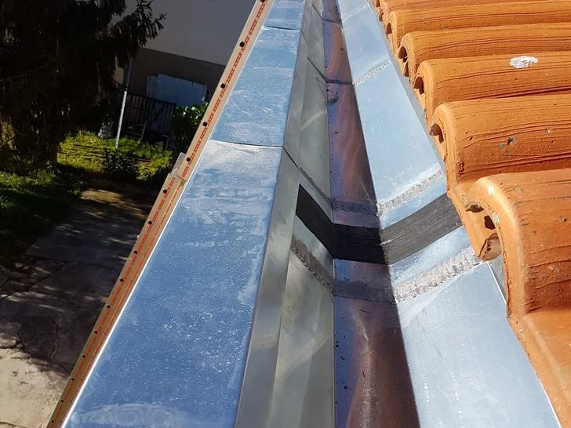
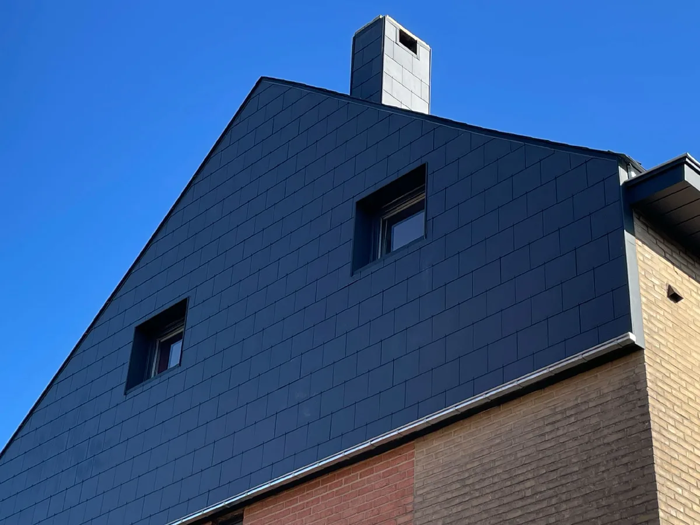
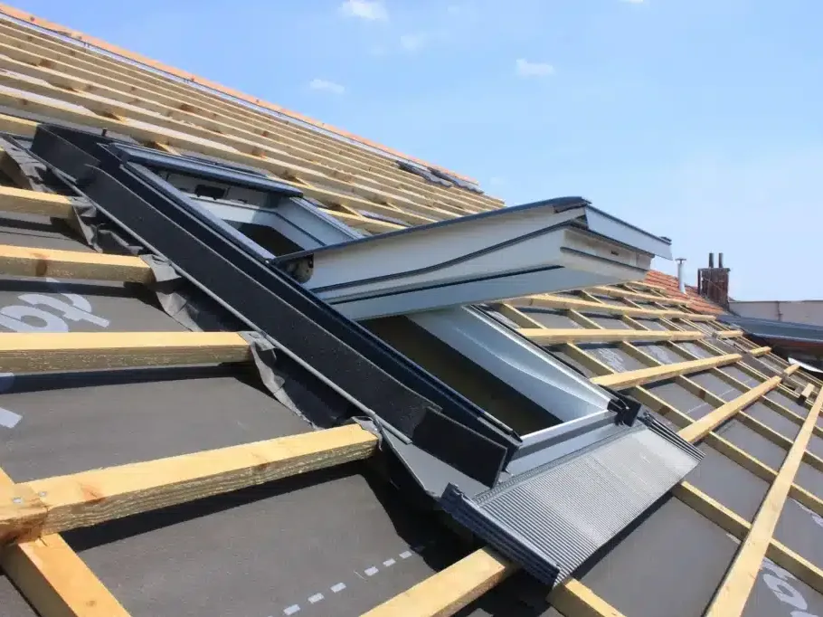
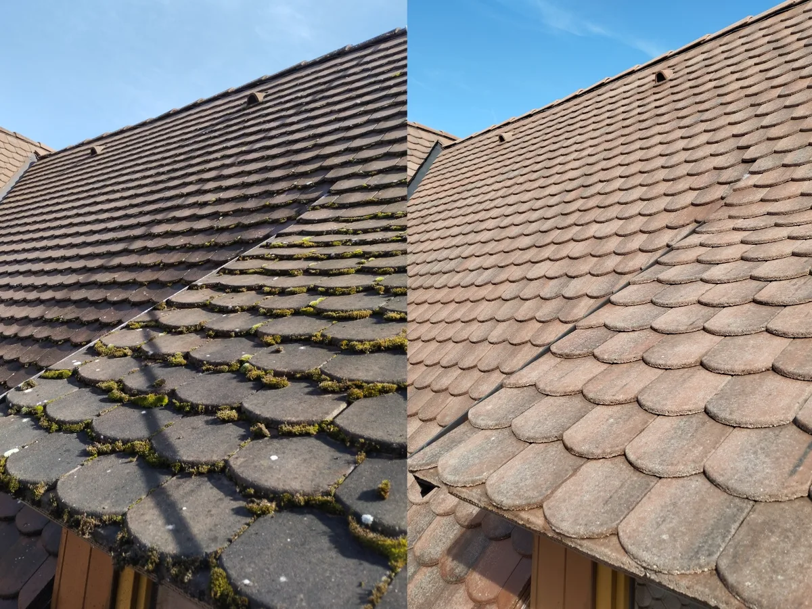
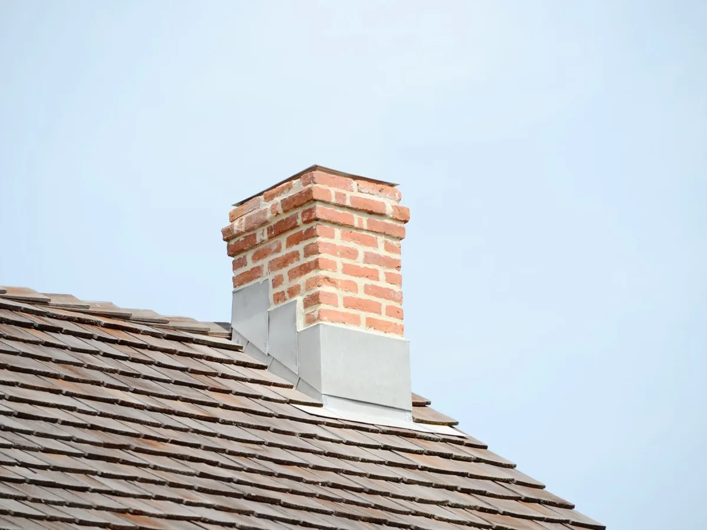

01
Couverture
Réfection et rénovation complète de votre toiture, quel que soit le matériau.
- Dépose et pose de tuiles, ardoises, bac acier
- Remplacement de tuiles cassées ou déplacées
- Recherche et réparation de fuites
- Pose d'écran sous-toiture et liteaux
- Traitement et nettoyage de toiture

02
Zinguerie
Évacuation des eaux pluviales et habillages en zinc, pour protéger durablement votre bâtiment.
- Pose et remplacement de gouttières
- Descentes d'eaux pluviales
- Noues, solins et faîtages
- Bandes de rives et habillages
- Création sur mesure en zinc

03
Pignon
Travaux de finition et d'étanchéité sur les pignons, point sensible de toute toiture.
- Réfection de rives et de pignons
- Étanchéité et couvertines
- Habillage et bardage de pignon
- Reprise de maçonnerie en haut de pignon

04
Velux
Fourniture et pose de fenêtres de toit pour apporter lumière et volume à vos combles.
- Pose de fenêtres de toit neuves
- Remplacement de velux existants
- Raccords d'étanchéité soignés
- Habillage intérieur et finitions

05
Entretien
Entretien régulier de votre toiture pour prolonger sa durée de vie et éviter les mauvaises surprises.
- Démoussage et nettoyage de toiture
- Traitement anti-mousse et hydrofuge
- Peinture de toiture
- Ramonage de conduits de cheminée
- Nettoyage de gouttières et de chéneaux
- Contrôle de l'état de la toiture

06
Travaux d'intérieur
Des travaux d'intérieur pour compléter votre chantier et remettre votre habitation en état.
- Finitions et habillage intérieur
- Reprise de plafonds et de murs après une fuite
- Travaux de rénovation intérieure
- Remise en état après intervention

07
Petite maçonnerie
De petits travaux de maçonnerie, en complément de la toiture ou de manière indépendante.
- Reprise de maçonnerie en haut de pignon
- Réfection de souches de cheminée
- Rejointoiement et petites reprises de murs
- Scellements, appuis et solins maçonnés
Un projet de toiture ?
Décrivez-nous vos travaux, nous vous répondons rapidement avec un devis gratuit.